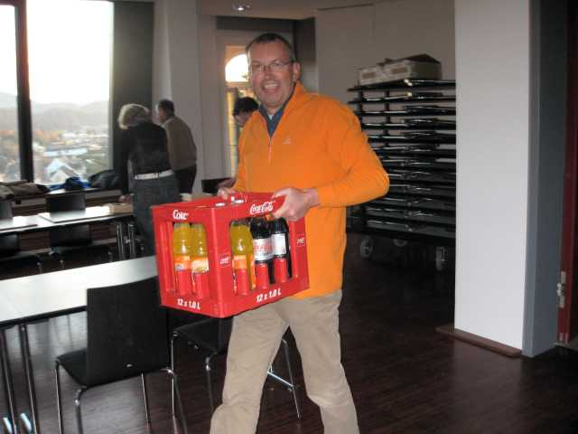
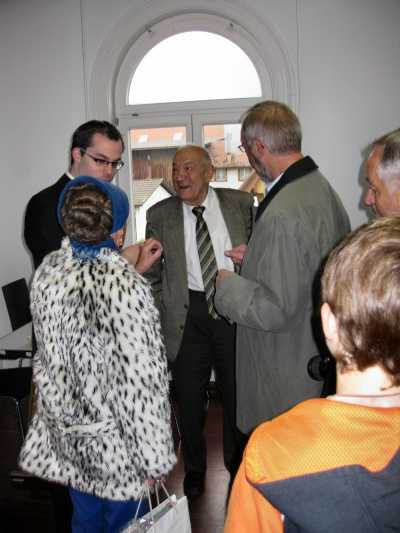
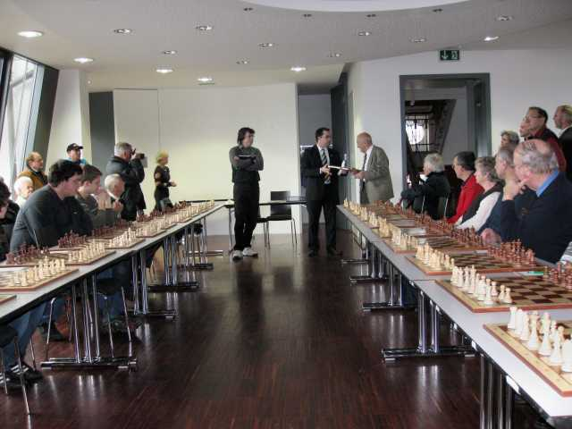
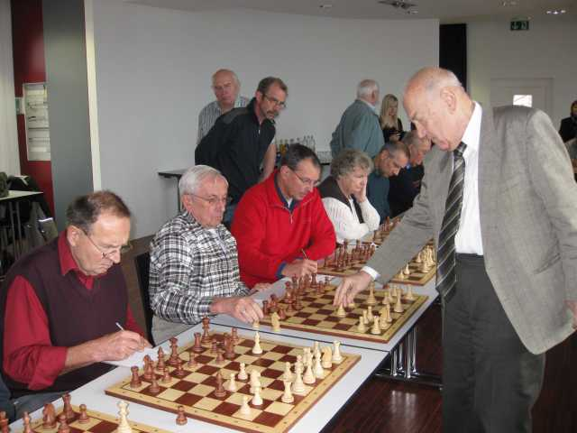
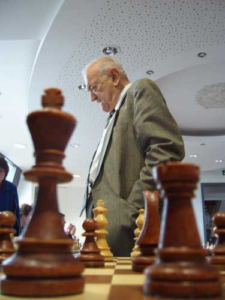
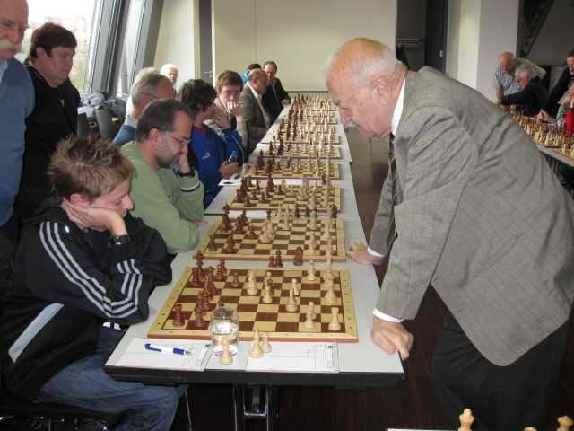
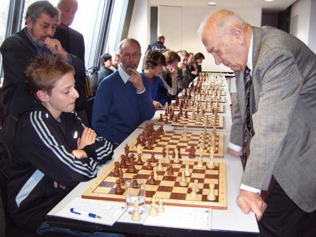
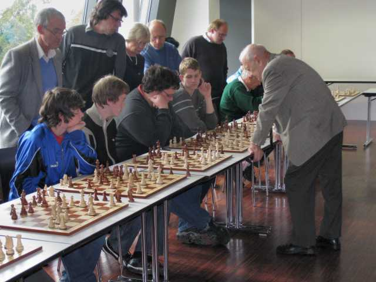
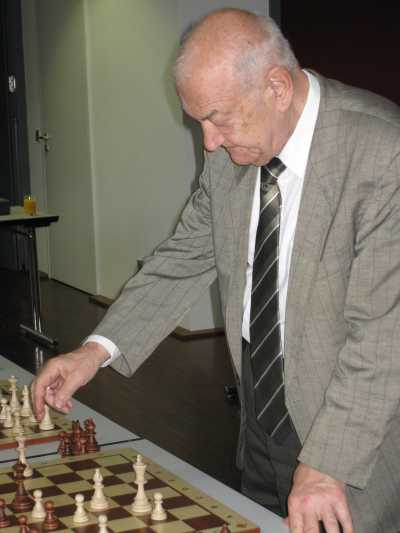
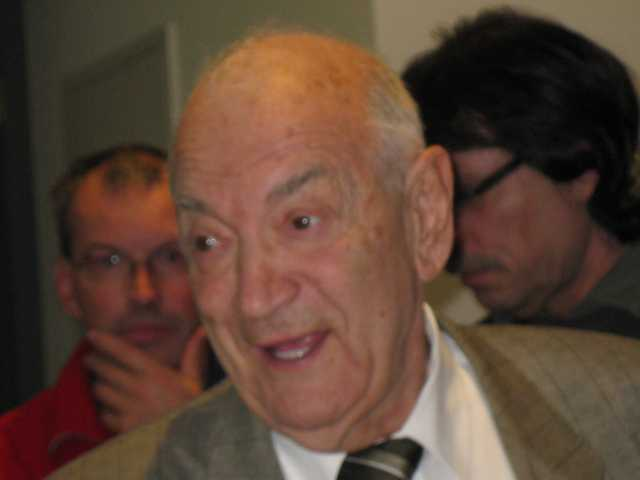

Schon die Vorbereitungen für das Turnier verliefen in entspannter Atmosphäre.

Bürgermeister Krieger begrüßt unsere Gäste.

Bürgermeister Krieger überreicht GM Kortschnoi einen Bildband über Laufenburg.

Viktor Kortschnoi erzählt kurz sein Schachleben.

Die Partieformulare wurden signiert...

und dann ging's an den 23 besetzten Brettern auch schon los.

Von der Presse festgehalten wurde der erste Zug an Brett 1
von Bürgermeister Krieger.

Der Webmaster wird kritisch beäugt von seinem jüngsten Sohn.

Hermann, Siegfried, Benno und Frau Witt (von links).

Wolfgang notiert seinen letzten Zug, Bernhard schaut interessiert zu.

Interessante Perspektive (Dank an Markus Haag für das Bild).

Gegen den Brombacher Gregor Haag tat sich Kortschnoi von Anfang an schwer...

und musste später die einzige Niederlage in Kauf nehmen.

Auch Jochen hatte eine interessante (und letztendlich auch lange) Partie.

Alt aber fit...

Am Ende durfte sich Viktor Kortschnoi bei der letzten Partie noch setzen.

Sichtlich froh, dass er die letzte Partie gegen Jochen dann doch noch gewonnen hat...

Rechts neben Kortschnoi der einzige Sieger Gregor Haag und die drei Remisierer.